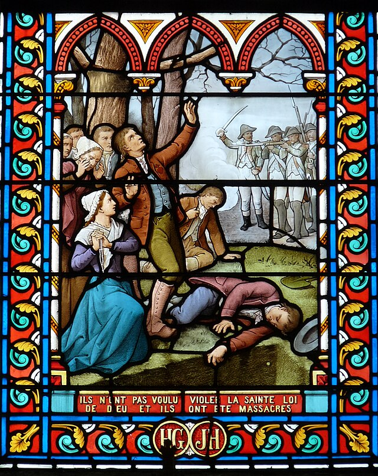
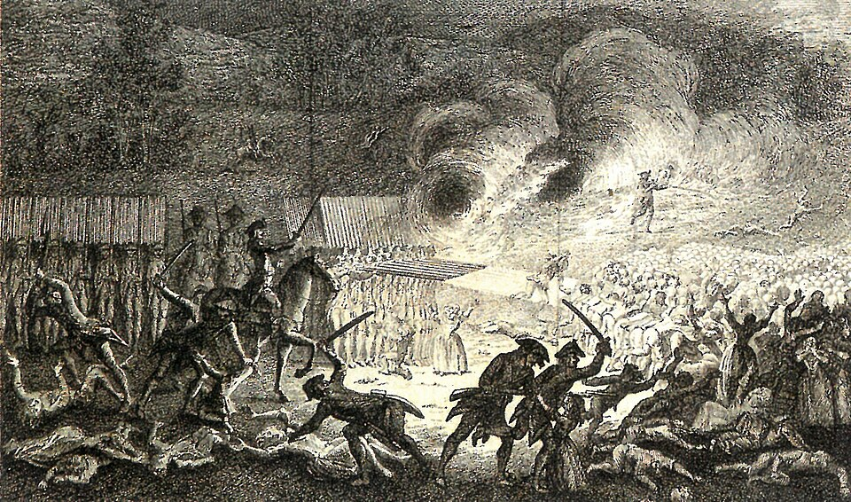

Cette page présente les principaux massacres commis contre les civils vendéens
Attention : le contenu qui suit aborde des événements particulièrement violents et peut heurter la sensibilité de certains lecteurs.
Les noyades de Nantes

Source de l'image : World History Encyclopedia →
Les noyades de Nantes

Après plusieurs batailles, notamment la défaite vendéenne de Savenay en décembre 1793, des milliers de vendéens notamment des soldats des prêtres des femmes et des enfants sont conduits à Nantes. La ville devient alors le théâtre d’un des épisodes les plus tragiques de la Révolution, que l'on appelle "les noyades de Nantes", organisées sous l’autorité du représentant en mission Jean-Baptiste Carrier.
Il est envoyé par la Convention pour écraser la révolte vendéenne et adopte une politique de terreur implacable. Convaincu que les insurgés représentent un danger mortel pour la République, il encourage des mesures d’extermination contre ceux qu’il appelle les « brigands ». Jugeant les exécutions classiques trop lentes, il adopte un moyen expéditif, celui des noyades dans la Loire, cyniquement désignées par certains révolutionnaires comme une « déportation verticale ».
Les exécutions se déroulent souvent la nuit. Des groupes de vendéen(ne)s, prêtres réfractaires, paysans, femmes, enfants sont embarqués de force sur des bateaux ou des barges préparées pour couler. Les couples sont séparés, déshumanisés, puis les victimes sont attachées nues, deux par deux et les embarcations sont conduites au milieu du fleuve puis sabordées. Ceux qui tentent de nager ou de se libérer sont souvent achevés par les soldats qui escortent l’opération. →
Les noyades de Nantes

La première noyade importante survient en novembre 1793, lorsque des prêtres emprisonnés sont emmenés sur la Loire et précipités dans les eaux glacées du fleuve. D’autres noyades suivent dans les semaines suivantes. Au total, les historiens estiment qu’il y eut entre sept et onze noyades collectives, qui firent probablement entre 3 000 et 5 000 victimes, bien que le nombre exact reste incertain en raison du chaos de l’époque et du manque de registres fiables.
Ces massacres ne constituent qu’une partie de la répression menée à Nantes. Des fusillades de masse sont également organisées dans les carrières proches de la ville, et des milliers de prisonniers meurent dans les geôles, victimes du froid, de la faim ou des maladies. L’ensemble de ces violences fait de Nantes l’un des symboles les plus sombres de la Terreur révolutionnaire.
Pour les populations vendéennes, ces noyades représentent une tragédie profonde. Derrière les chiffres se cachent des vies brisées, des familles entières disparues, des prêtres arrachés à leurs paroisses, des paysans exécutés sans jugement. La Loire elle-même devint, dans la mémoire collective, le témoin silencieux d’un drame humain où la guerre civile avait conduit à l’effacement brutal de toute pitié.
Aujourd’hui encore, les noyades de Nantes demeurent l’un des épisodes les plus tragiques de la Révolution française. Elles rappellent combien une guerre civile peut pousser un régime à des violences extrêmes, et comment la peur, l’idéologie et la vengeance peuvent conduire à des massacres dont la mémoire continue de marquer l’histoire de la Vendée et de la France.
Les Lucs-sur-Boulogne

Source de l'image : Flickr
Les Lucs-sur-Boulogne

Au début de l’année 1794, la guerre de Vendée aurait pu s'arrêter là. En effet, la grande armée vendéenne a été décimée. Pourtant, la répression augmente et atteint un degré de violence extrême. Alors qu'il n'y a plus d'armée, la Convention nationale décide d’anéantir définitivement toute "résistance" (insuffisamment définie) dans l’Ouest. Un véritable génocide s'organise. Pour cela, le général Louis Marie Turreau met en place une stratégie de terre brûlée appelée les « colonnes infernales » que sont des unités militaires chargées de parcourir la Vendée pour détruire villages, récoltes et populations soupçonnées de soutenir les insurgés.
C’est dans ce contexte que survient le massacre des Lucs-sur-Boulogne, les 28 février et 1er mars 1794, dans le village du même nom " Les Lucs-sur-Boulogne", au cœur du bocage vendéen.
À la fin de l’hiver 1794, plusieurs colonnes républicaines parcourent la région. L’une d’elles, commandée par le général Étienne Cordellier, pénètre dans les villages des Lucs. Les soldats ont reçu l’ordre de brûler les fermes et d’éliminer les « brigands » (terme employé par la République pour désigner les insurgés vendéens).
Mais dans cette guerre civile confuse, la distinction entre combattants et civils disparaît souvent. Les troupes progressent de maison en maison. Les habitants tentent de fuir à travers le bocage, mais beaucoup sont rattrapés. Des fermes sont incendiées, des familles entières abattues ou massacrées.
La population du village est alors composée en grande majorité de femmes, d’enfants et de vieillards.
Une partie des habitants cherche refuge dans l'église du Petit-Luc, espérant trouver protection dans ce lieu sacré. Selon les témoignages conservés dans les archives paroissiales, les soldats pénètrent dans le village, incendient l'église où s'étaient réfugiés de nombreux vendéens et ouvrent le feu sur ceux tentant de s'échapper.
Le massacre est brutal. Les habitants sont abattus à bout portant et violemment achevés à la baïonnette. Beaucoup de victimes sont des enfants très jeunes, parfois des nourrissons torturés pour le sinistre "plaisir des soldats". →
Les Lucs-sur-Boulogne

Un document essentiel pour comprendre ce drame est le martyrologe des Lucs, rédigé peu après les événements par le curé du lieu, Monsieur Pierre-François Robin. Il y consigne minutieusement les noms et les âges des victimes connues. Une véritable hécatombe de civils. En effet, ce registre mentionne 564 victimes identifiées, dont plus de 110 enfants de moins de 7 ans, de nombreuses femmes et plusieurs personnes âgées.
Certaines familles sont entièrement anéanties en quelques heures.
Le massacre ne se limite pas à l’église. Dans les hameaux et les fermes alentour, les colonnes républicaines poursuivent les habitants, tuant ceux qu’elles rencontrent et incendiant les bâtiments. Le bocage, qui avait longtemps protégé les insurgés, devient un piège pour ceux qui tentent de fuir.
Le massacre des Lucs n’est pas un épisode isolé. Il s’inscrit dans la politique de destruction menée par les colonnes infernales durant l’hiver et le printemps 1794.
Les ordres de Turreau prévoyaient explicitement de ravager la région insurgée, brûler les villages, détruire les récoltes et frapper les populations soupçonnées d’aider les rebelles. Dans la pratique, cette stratégie conduit souvent à des massacres indiscriminés.
Dans le village, une chapelle mémorielle " la chapelle du Petit-Luc " conserve les noms des victimes inscrits sur des plaques de marbre. Ce lieu de mémoire rappelle la brutalité de cette guerre civile où, en quelques heures, un village entier fut presque anéanti.
Derrière les chiffres se trouvent des destins humains, des mères serrant leurs enfants, des vieillards incapables de fuir, des familles entières effacées.
Nuaillé-Vézin
Images directement prises du compte @puissance_vendeenne

Nuaillé-Vézin

Nuaillé-Vézin

Nuaillé-Vézin

Nuaillé-Vézin

Nuaillé-Vézin

Nuaillé-Vézin

Nuaillé-Vézin

Les fusillades d'Avrillé

1794, en pleine répression devenue religieuse, dans les champs situés près du village d’Avrillé, les autorités révolutionnaires organisent des exécutions massives de "prisonniers" vendéens alors âgés de 14 à 84 ans.
Après les combats de la fin de 1793, des colonnes de captifs arrivent à Angers : paysans du bocage, soldats vendéens capturés, prêtres réfractaires, mais aussi femmes et enfants, marchant sur le chemin de la mort. Deux bonnes sœurs "Marie-Anne" et "Odile" Baumgarten furent exécutées elles aussi. On compte jusqu'à 400 vendéens exécutés en un jour ; une véritable extermination.
Les prisons étant engorgées, les tribunaux révolutionnaires "jugeaient" à la chaîne, souvent en masse, et les condamnés sont conduits hors de la ville.
Dans les champs d’Avrillé, les groupes sont alignés face aux pelotons d’exécution. Les fusillades se succèdent pendant plusieurs semaines. Les corps sont grossièrement jetés dans des fosses communes creusées à la hâte.
Les estimations historiques parlent d'au moins 2 000 victimes exécutées dans ce lieu devenu plus tard le "Champ des Martyrs".
La Vendée rasée, la ville rasée

Les colonnes traversent la ville de Clisson comme une tempête de feu. Le général Westermann, grand bourreau de la Vendée, a rapporté d'infâmes propos après avoir commis des atrocités de Savenay à Clisson :
"Il n'y a plus de Vendée, citoyens républicains. Elle est morte sous notre sabre libre, avec ses femmes et ses enfants. Je viens de l'enterrer dans les marais et dans les bois de Savenay. Suivant les ordres que vous m'aviez donnés, j'ai écrasé les enfants sous les pieds des chevaux, massacré des femmes, qui, au moins pour celles-là, n'enfanteront plus de Brigands. Je n'ai pas de prisonnier à me reprocher. J'ai tout exterminé. Un chef de Brigands, nommé Designy, a été tué par un maréchal-des-logis. Mes hussards ont tous à la queue de leurs chevaux des lambeaux d'étendards brigands. Les routes sont semées de cadavres. Il y en a tant que, sur plusieurs endroits, ils font pyramide. On fusille sans cesse à Savenay ; car, à chaque instant, il arrive des Brigands qui prétendent se rendre prisonniers. Kléber et Marceau ne sont pas là. Nous ne faisons pas de prisonniers ; il faudrait leur donner le pain de la liberté, et la pitié n'est pas révolutionnaire".
A Clisson, les maisons sont incendiées, les granges brûlent, les rues se couvrent de débris, de cadavres et de cendres. Les habitants qui n’ont pas réussi à fuir sont abattus ou dispersés dans la campagne. Beaucoup tentent de se cacher dans les bois ou les chemins creux du bocage, mais la ville elle-même est condamnée, plus de 2 000 vendéens sont exécutés, représentant la quasi totalité de la ville.
Les flammes dévorent les habitations, les bâtiments publics et une grande partie de la cité médiévale historique. Lorsque les troupes quittent les lieux, Clisson n’est plus qu’un paysage de ruines fumantes.
Pendant des années, la ville reste presque abandonnée. Les voyageurs qui traversent la région évoquent un "bourg fantôme", marqué par les murs effondrés et les maisons calcinées.
Clisson devient alors l’un des symboles de la politique de terre brûlée menée dans la Vendée insurgée.
Le massacre de la Gaubretière

Dans le bocage vendéen, la paroisse de La Gaubretière connaît elle aussi la violence des colonnes infernales en 1794. Aux yeux des autorités révolutionnaires, la population vendéenne devient suspecte dans son ensemble.
Lorsque les colonnes républicaines arrivent dans la paroisse de la Gaubretière, la panique gagne les habitants. Certains tentent de fuir à travers les chemins creux du bocage tandis que d’autres se cachent dans les fermes ou les granges.
Mais les soldats progressent méthodiquement. Les maisons sont fouillées, les habitations incendiées. Les habitants surpris sur leur chemin sont froidement abattus. Les flammes gagnent les toits de chaume et les fermes se consument rapidement.
Des familles entières disparaissent dans cette violence. Les survivants, souvent dispersés dans la campagne, découvrent après le passage des troupes un village ravagé, où les maisons brûlées et les corps abandonnés témoignent de la brutalité de la répression.
Des témoins évoquent des maisons brûlées avec leurs habitants, des familles massacrées et des villages vidés de leurs habitants.
Pour commémorer ce lourd passé, un "panthéon" a été inauguré. Il porte le nom de "Panthéon de la Vendée Militaire" (voir l'image).
Chaque famille contemporaine ayant une ascendance vendéenne durant cette période a au moins un(e) ancêtre ayant été tué(e) durant cette guerre et ce génocide vendéen.
Durant les guerres de Vendée et la terrible répression qui s’ensuivit, des dizaines de paroisses furent ravagées, leurs habitants dispersés, emprisonnés ou exécutés. Villages incendiés, familles brisées, campagnes dévastées. La région entière fut marquée par une violence dont les cicatrices demeurent encore dans la mémoire des lieux.
Sur cette page ont été évoqués quelques-uns des massacres les plus marquants de cette période sombre. Ils ne représentent pourtant qu’une part de la tragédie, car bien d’autres villages et paroisses connurent des souffrances semblables, parfois sans laisser d’autres traces que les souvenirs transmis de génération en génération.
Ainsi s’achève cette page lourde de mémoire.
Que le souvenir de ces événements demeure non pour raviver la haine, mais pour rappeler le prix humain des guerres civiles.
Prions pour les âmes de tous les innocents qui périrent durant ces tragiques années.